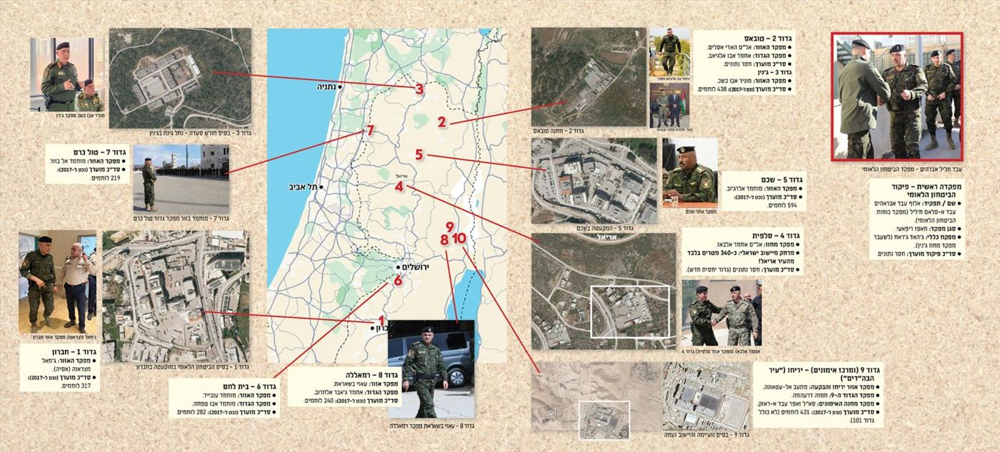

The map shows the central and northern part of Israel and the West Bank, with ten red numbered markers. Each marker connects by a red line to a callout for one battalion of the Palestinian Authority's National Security Forces, with a satellite view of the base, a photo of the area commander, and a box with names and a strength figure. A larger boxed photo at the top right shows the National Security commander. The map's own place labels (in Hebrew) are Netanya, Tel Aviv, Jerusalem and Hebron.
The outlet's article says its figures come from "open-source intelligence" (official publications, videos and social media posts by the Palestinian forces themselves). It describes the picture as an estimate of tens of thousands of fighters across all branches, with about 8,000 in ten National Security battalions (nine regional battalions plus the mobile reserve "Battalion 101"), and more than 60 police posts that it says it will map in a second article. The article itself says there is no current public data on exact strength, and that the figures on the map come from research and estimates from about ten years ago (the map marks them "as of 2017"). The map does not show Battalion 101 or the police posts, apart from a note on the Jericho box.
| Marker and place | What the map says (translated from Hebrew) |
|---|---|
| Top right, photo | "Abd Khalil Ibrahim, commander of the National Security." |
| Top right, box: "Main headquarters, National Security command" | Name / position: Maj. Gen. Abd Ibrahim Abd al-Salam Khalil (commander of the National Security Forces). Deputy commander: Hafez Rifai. Inspector general: Jihad Jarrah (formerly commander of the Jenin district). Estimated command strength: no data. |
| 1. Hebron | Battalion 1, Hebron. Area commander: Jamal Mazraawa (Asiya). Estimated strength (as of 2017): 317 fighters. Aerial photo: "Battalion 1, the National Security base in the muqata'a in Hebron." |
| 2. Tubas | Battalion 2, Tubas. Area commander: Col. Hadi Aslam (spelling uncertain). Battalion commander: Ahmad Abu al-Ghiab. Estimated strength: no data. Aerial photo: "Battalion 2, Tubas camp." |
| 3. Jenin | Battalion 3, Jenin. Area commander: Munir Abu Kashk. Estimated strength (as of 2017): 438 fighters. Aerial photo: "Battalion 3, the Horsh Saada base, on the site of the former Nahal Ginot outpost in Jenin." |
| 4. Salfit | Battalion 4, Salfit. District commander: Col. Ahmad al-Baz. Distance from an Israeli community: about 340 meters from the city of Ariel (the map adds an exclamation mark). Estimated strength: no data ("a relatively new battalion"). The aerial photo is labeled "Ariel." |
| 5. Nablus (Shechem) | Battalion 5, Shechem. Area commander: Muhammad al-Rajawi (spelling uncertain). Estimated strength (as of 2017): 594 fighters. Aerial photo: "Battalion 5, the muqata'a in Shechem." |
| 6. Bethlehem | Battalion 6, Bethlehem. Area commander: Muhammad Obeid. Battalion commander: Muhammad Abu Safa (spelling uncertain). Estimated strength (as of 2017): 282 fighters. |
| 7. Tulkarm | Battalion 7, Tulkarm. Area commander: Muhammad al-Bazur. Estimated strength (as of 2017): 219 fighters. Photo: "Battalion 7, Muhammad Bazur, commander of the Tulkarm battalion." |
| 8. Ramallah | Battalion 8, Ramallah. Area commander: Azzi Basharat (spelling uncertain). Battalion commander: Ahmad Jaber al-Harub. Estimated strength (as of 2017): 240 fighters. |
| 9 and 10. Jericho | "Battalion 9 (and training center), Jericho ('city of the bases')." Jericho and Aqabat area commander: Mu'ataz al-Atawneh (spelling uncertain). Battalion 9 commander: Hamza Dar'ahma. Training camp commander: Lt. Col. Zafer Abd al-Razek. Estimated strength (as of 2017): 431 fighters (not including Battalion 101). Aerial photo: "Battalion 9, the Na'imah base and the community of Na'ama." Markers 9 and 10 both connect to this entry; the map does not say which number is the battalion and which is the training camp. |
Some Hebrew spellings of Arabic names are small and hard to read in the image; where a transliteration is uncertain it is marked. Titles and ranks are as the map gives them.
Hakol Hayehudi is an Israeli right-wing outlet and its framing (for example, calling the force an army "under cover") is its own view. Keep that in mind when using the map; we have not verified the names, locations or numbers on it.
Map and article: Hakol Hayehudi (hakolhayehudi.co.il), reproduced as a backgrounder at Tom's request. All rights remain with the outlet. The header photo of the same article (a Palestinian training exercise) is not part of the map and is not reproduced here.